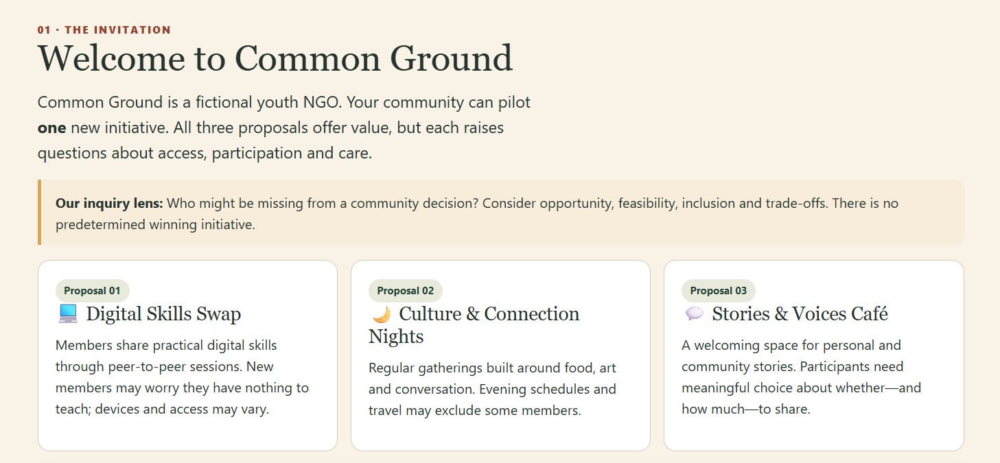
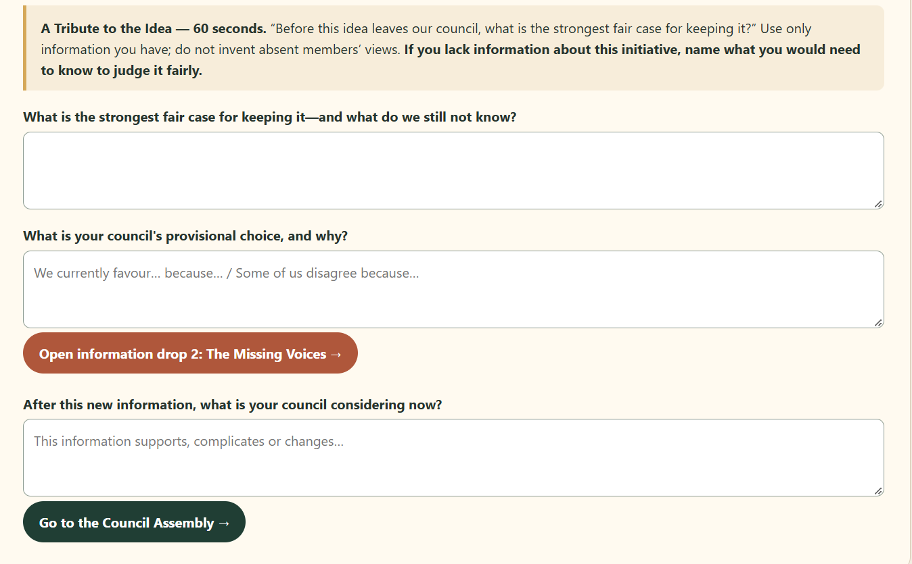
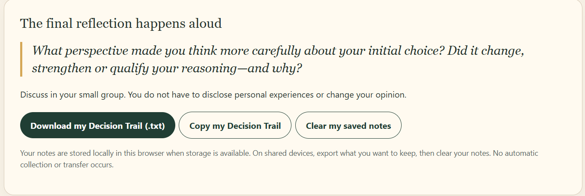

The Voices We Miss
How do we make a community decision when not everyone has been heard?
A 90-minute facilitated, scenario-based learning experience that invites young adults to examine competing proposals, encounter different information, and make room for perspectives that might otherwise be overlooked.
Snapshot
A choice that cannot be made well from one perspective
Common Ground is a fictional youth NGO with capacity to pilot just one initiative. Learners weigh three worthwhile proposals: Digital Skills Swap, Culture & Connection Nights, and Stories & Voices Café. Each has benefits, practical constraints, and questions about whose needs may be missed.
The design challenge was not to teach participants which proposal to choose. It was to help them recognize how partial information, unequal access, and absent voices shape collective decisions—without requiring consensus or personal disclosure.

Designing for participation without forced disclosure
The workshop is designed for a facilitated group setting. Participants make a private first choice before group discussion, then work in small councils of four or five. Facilitators manage the timing of information releases and support discussion.
Participation is intentionally flexible: no one is required to volunteer as an Ambassador, share a personal experience, or change their position. These boundaries matter when learning activities involve identity, belonging, and community priorities.
Individual judgment first. Shared inquiry next.
Rather than opening with debate, the experience separates initial preference from later deliberation. The Community Pulse can display anonymous group-level totals, giving participants a view of the room without exposing individuals. Councils then receive different information packets and revisit their provisional decisions as additional perspectives emerge.
Design choice 01
Protect an independent first choice
Participants record their own initial preference before hearing the group, making later reflection about their reasoning possible.
Design choice 02
Distribute information unevenly—on purpose
Different councils begin with different packets. The later Assembly makes the limits of each group's knowledge visible and creates a reason to listen.
Design choice 03
Give a vulnerable idea a fair hearing
Before provisional elimination, a voluntary Ambassador offers the strongest fair case for retaining the proposal. Learners are instructed not to invent absent people's views and to identify what they still need to know.
From first choice to reconsidered judgment
01 · Invitation and private first choice
Learners meet Common Ground and its three proposals, then record an initial preference independently.
02 · Community Pulse and council inquiry
The facilitator reveals anonymous group-level results. Councils receive assigned information packets and examine trade-offs.
03 · Tribute to the Idea and missing voices
Before an idea is set aside, learners practice fair representation. A subsequent information drop introduces perspectives or constraints that complicate the earlier judgment.
04 · Council Assembly and Decision Trail
Groups exchange what they learned, reconsider their choices, and reflect aloud on how their reasoning was challenged, strengthened, or qualified.
Design in action


What has been checked—and what has not
The interactive HTML is a working facilitated prototype, not a synchronized voting platform. It does not transmit votes or synchronize phones. The facilitator must use an actual anonymous collection method for the Community Pulse and may manually enter aggregate totals into the display.
Participant notes are stored locally when browser storage is available; there is no automatic collection or transfer. The experience has been tested locally for its intended interactions, but it has not yet been formally piloted with learners. Claims about improved perspective-taking or decision quality would require observation and evaluation in a real session.
A future pilot could examine whether learners can name previously overlooked stakeholders, articulate a fair case for an alternative, and explain how new information affected their reasoning. These are proposed evaluation indicators, not measured outcomes.
Designer's Reflection
My central design decision was to make listening necessary rather than merely desirable. By giving councils different information, I created a reason to exchange perspectives. By placing the Tribute before elimination, I made fairness part of the decision process rather than an afterthought.
I also wanted to avoid equating a successful workshop with agreement. A learner who retains their first choice but can explain it more carefully, acknowledge missing information, and represent another view fairly may have made meaningful progress.
The main implementation trade-off is facilitation complexity: the staged information drops, private choices, and anonymous pulse require clear facilitator guidance. A pilot would help establish where the pacing or instructions need adjustment.